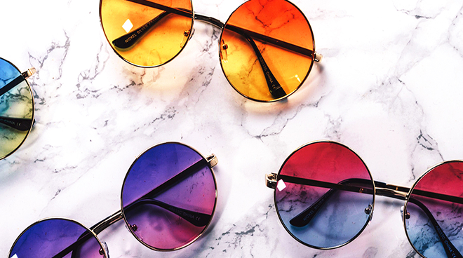

1. 기술보다 감성: '구글 글래스'의 실패에서 배운 것
구글은 2013년 '구글 글래스'로 웨어러블 시장에 도전했지만, 결과는 실패였습니다.
- 너무 기술 중심이었다
- UX보다 '기능성'을 강조했다
- 패션 아이템으로 보기에 부담스러웠다
이번에는 다릅니다!
젠틀몬스터는 '기술이 아닌 감성'으로 승부하는..
구글이 그들과 손잡은 것은, 기술을..
전략전 선택으로 보입니다. 이유는...
MZ세대의 취향, 스마트폰 다음은...
MZ세대는 기능보다 '감도'를 소비합니다. 단순히..
그런 의미에서 젠틀몬스터의 합류는...
- 트렌디한 디자인
- 인스타..
- 글로벌...
이 모든 것이..

뉴스 구독하기
구글 삼성 젠틀몬스터 : K-라이프스타일 플랫폼이...
보도에 따르면 구글은 삼성과의 이 삼자 협력을 통해...
- 실시간 번역...
- 안경을 쓰면...
- 감성적 디자인...
구글은 기술이 아닌 디자인과 감성을 택했다.
스마트 안경은 단순 디바이스가 아닌...